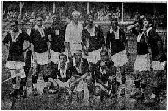

História
O Club de Regatas Vasco da Gama foi fundado por quatro remadores em 21 de agosto de 1898, voltado para o esporte marítimo. Seu primeiro time de futebol surgiu no fim de 1915. O nome Vasco da Gama é uma homenagem ao português: no ano de fundação do clube, comemorava-se o quarto centenário da descoberta do caminho marítimo às Índias. A equipe venceu a divisão de acesso do Campeonato Carioca em 1923, conquistando o seu primeiro Estadual logo no ano seguinte. Entre os principais títulos vascaínos destacam-se a Copa Libertadores da América de 1998, ano de seu centenário, e o Campeonato Sul-Americano de Clubes, antecessor do Continental, em 1948.
O Club de Regatas Vasco da Gama foi fundado por quatro remadores em 21 de agosto de 1898, voltado para o esporte marítimo. Seu primeiro time de futebol surgiu no fim de 1915. O nome Vasco da Gama é uma homenagem ao português: no ano de fundação do clube, comemorava-se o quarto centenário da descoberta do caminho marítimo às Índias. A equipe venceu a divisão de acesso do Campeonato Carioca em 1923, conquistando o seu primeiro Estadual logo no ano seguinte. Entre os principais títulos vascaínos destacam-se a Copa Libertadores da América de 1998, ano de seu centenário, e o Campeonato Sul-Americano de Clubes, antecessor do Continental, em 1948.
Grandes nomes jogaram pelo Vasco da Gama dentre eles estão: Ademir de Menezes Augusto Barbosa Bellini Danilo Edmundo Ely Juninho Pernambucano Roberto Dinamite Romário